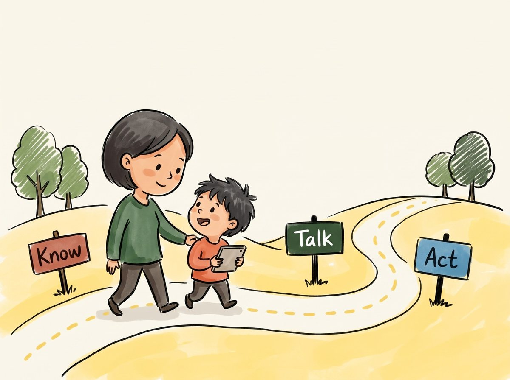
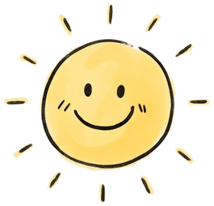
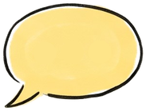

A simple conversation shows you how they see things, and keeps you part of their online world. Not sure how to begin? Our interactive game gets the conversation going.



Tap a step to go to its short guide.
Most kids come across harmful content by accident, through autoplay, pop-ups or links from friends.
What to look out for → 2Promise they won't get in trouble for telling you. Then ask, and listen.
What to say → 3Stay calm and thank them for telling you. Then follow a simple plan.
What to do →Choose a type of content to see where kids find it and the signs to look out for.
No big lecture needed. Short chats, often, work best.
Children often keep quiet about what they see online because they worry they'll get in trouble. Telling them early makes it easier for them to come to you.
"If you ever see something online that upsets or confuses you, you can always tell me. I won't be angry."Use your own words, and say it again every now and then.
A car ride or walk home works well. Avoid right after a meltdown or at bedtime.
Let your child do most of the talking. Ask about "kids at school" first. It's easier than talking about themselves.
Choose a topic and your child's age to get easy ways to start the chat.
Give a reason first, like "Some parents told me…", so the question doesn't come out of nowhere. Adapted from Digital for Life.
Agree as a family that anyone can bring up something they saw online, and no one gets in trouble for it.
Once a week, sit with your child while they play or scroll. Ask, "Who's your favourite creator? What do you like about them?"
No devices at dinner, and devices charge outside the bedroom at night. Want it in writing? Try TOUCH's Tech Agreement.
Most of the time, a calm chat at home is all it takes. Pick what happened to see how to react and support your child.
Pick a situation above to see what to do.
In an emergency, call 999 (Police) or 995 (Ambulance). For emotional support any time, SOS is on 1767.
Save these in your phone today. You'll know where to turn if you ever need to.
What it is: a free, confidential helpline where trained volunteers listen.
Call if: your child (or you) feels hopeless, is in emotional crisis, or talks about not wanting to live.
What it is: a free helpline for parents and kids about problems online. Not for emergencies.
Call if: your child saw something upsetting, is being bullied online, or is gaming too much and you want advice.
What it is: a free helpline and chat just for primary school kids, run by Singapore Children's Society.
Share it so: your child has someone to talk to about anything worrying them, at school, at home or online.
What it is: a Singapore government agency that can get harmful posts taken down.
Report if: someone shares intimate or abusive images of your child, posts their personal details (doxxing), or harasses or stalks them online. For harassment or stalking, report to the app or platform first. Under 18? A parent or trusted adult can report with your child's permission.
What do you need?
Checked against official sources, Nov 2026. Tap a name to confirm on its website.
A cooking game for you and your child. Answer everyday online moments side by side. When your answers differ, you talk it through, and the conversation starts on its own.
Play the game →